顺序执行 🥊
回忆上次内容
- 计算机 本身特性 决定
- 计算机中 保存传递的 是
电子
- 而不用 借助
原子 实体
- 存储和分发软件的成本 几乎为
零
- 在 这样的物理基础上
- 出现了 自由软件运动
- 从rms提出的 free software
- 到gnu研发 各种软件
开源运动
自由软件运动
- 有 很强的
人文色彩
- 是一种 理想化的 社会运动
- 但有点 不食人间烟火
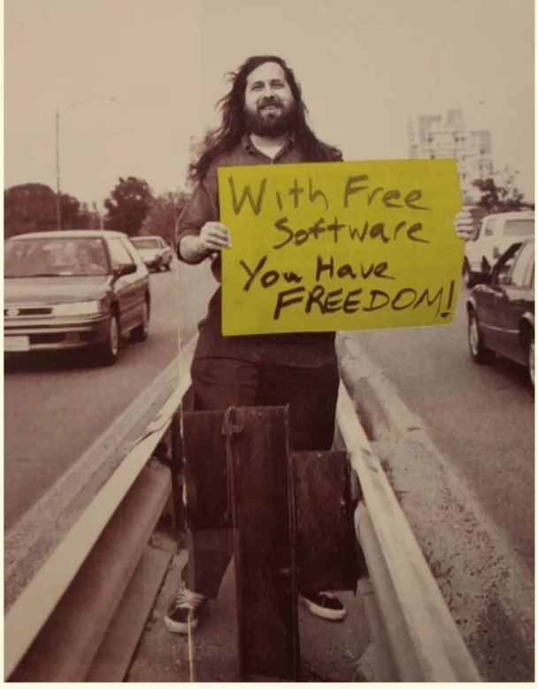
- 空喊 自由和免费
- 想要 和世界互动
- 细菌和昆虫
- Stallman的 GNU
GNU
linux内核
- 从minix 改造出linux内核
- 并且 响应 自由软件运动
- 将源代码 放到网上
- 供大家 使用和修改
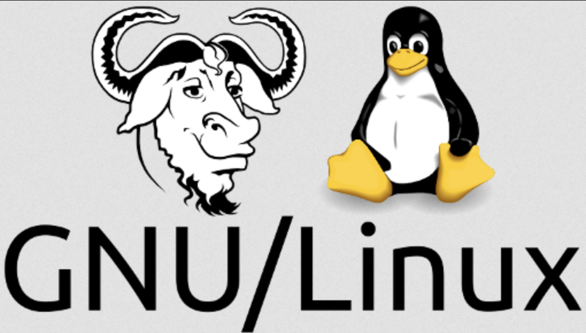
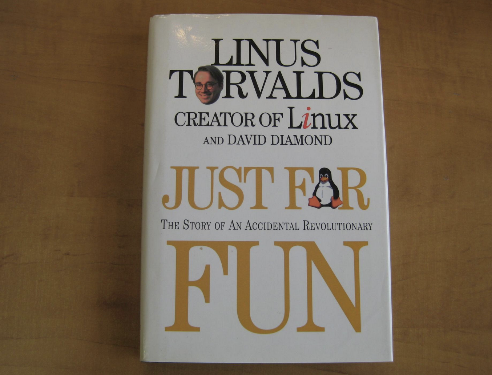
-
linus补完了 GNU计划
-
内核和外部组件一起
- 构成我们能用的软件环境
- linux 内核和 GNU 的组件合在一起
- 才是操作系统
分享的力量
- Linus Torvalds的开发风格是
- 早发布
- 常发布
- 委托所有能委托的事
- 开放到几乎是混乱的程度
- linux的用户就是linux的开发者
- 这东西是给自己做的
- Linus在持续不断地激励和回报着他的用户
- 用自我满足感激励他们
- 用持续改进（甚至每天都有改进）回报他们
后续发展
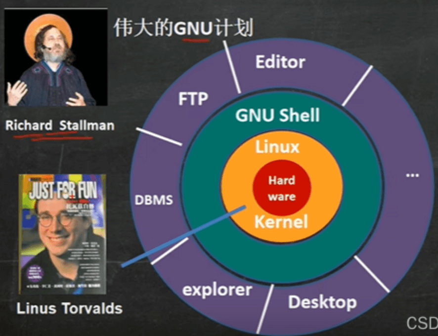
代码
- 在author一栏
- 可以看到 Stallman的贡献
- 当然 不只是 ls这一个命令
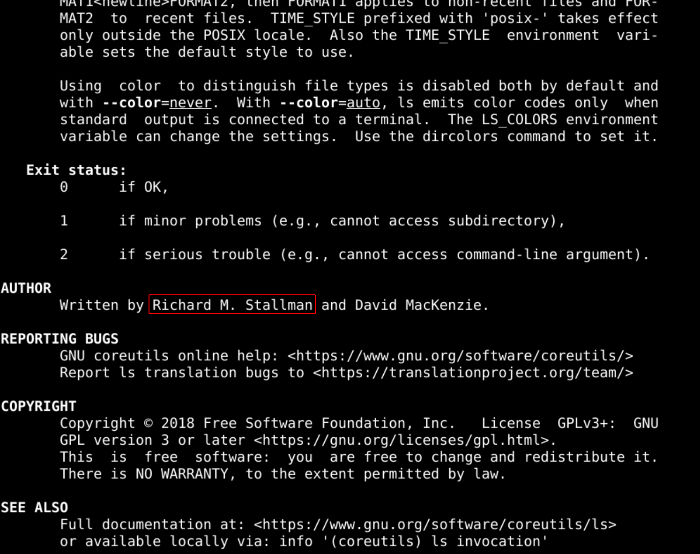
- 在 0.02 版后
- 来自 世界各地的程序员
- 加入 linux内核的 开发
进化
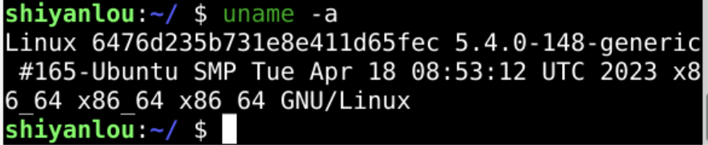
著作
- 1997 年
- Eric Ryamond 出了一本书
- 描述了linux发展过程
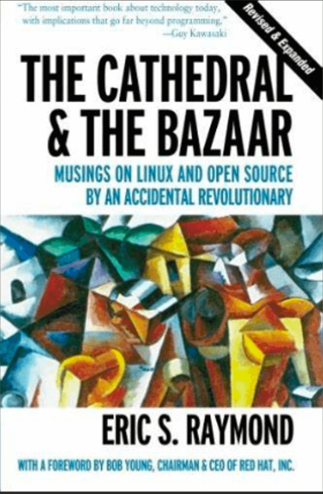
- 把商业公司 的 开发模式
- 比作教堂
- 有 详细的蓝图、模板
- 有 一步一步的 操作流程
- 从顶而下 强制执行
- 把 linux 这种开发模式
- 比作是 巴扎(集市)
- 没有 强制性的分工
- 按照 兴趣驱动
- 任何人 可以随时离开
- 这是 在大公司里面
没有的
开源
- Eric 觉得 Linux 的开发模式
- 比 大机构 的 官僚主义模式
- 先进自由得多
- 也是 成功的原因
开源定义
- Eric 把
- 通过 这种模式 产生出来的代码
- 叫做
开源软件
- open source
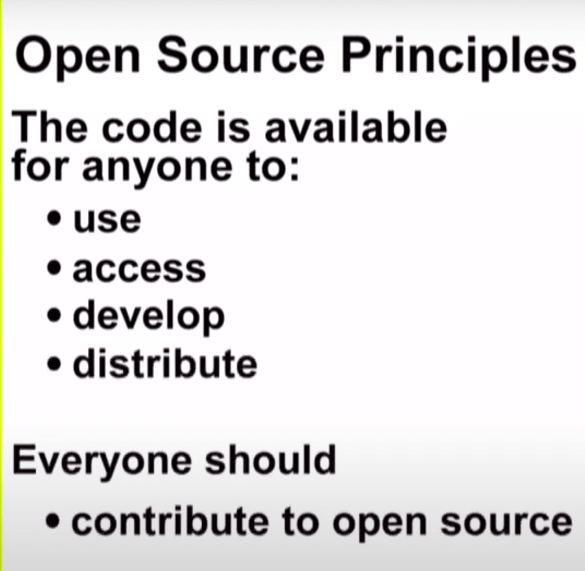
新的运动兴起了
-
开源运动
- 接过
自由软件运动 的旗帜
- 对于软件 就事论事
- 提供了一种 可以操作的 开发方法
-
自由软件运动 逐渐 变成了开源运动
-
但是 原来的 自由软件先锋
-
软件公司 如何看待开源呢？
微软
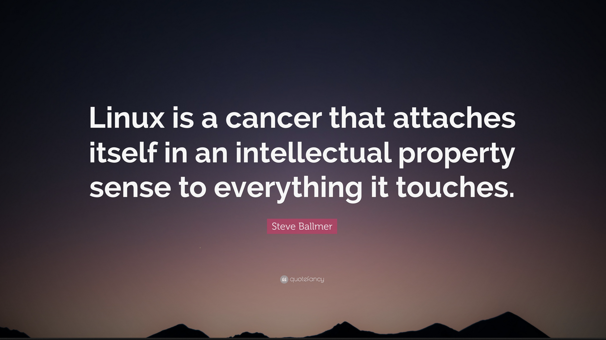
- 微软总裁
- 对linux 的评价是 癌症
- 希望 开源软件 彻底消失
吃饭问题
-
首先
-
商业软件公司
- 超越 个人软件爱好者
- 形成 软件产业
- 已是 既成事实
年轻人
- 聪明的人
- 在 公司 既定的框架 之外
- 也能 开发创造
- 并且 以此谋生
- 软件公司 中
- 最新 最原发的 创意
- 并不来自 公司规定的
岗位职责
- 还是 来自于 具体的人
兴趣使然
-
热爱才会 投入更多精力
- 不分时间 也不分天赋
- 从而 勇猛精进
- 成为高手
- 而不是 被动接受命令和任务
- 违心地 做些行活儿
-
热爱 不会 因为回报少了
人脑的价值
- 人脑的 灵光乍现
- 是 最宝贵 的事物
- 还是最符合人性需求的
- 具有人性
- 人类会流泪的 心灵
辨析
git
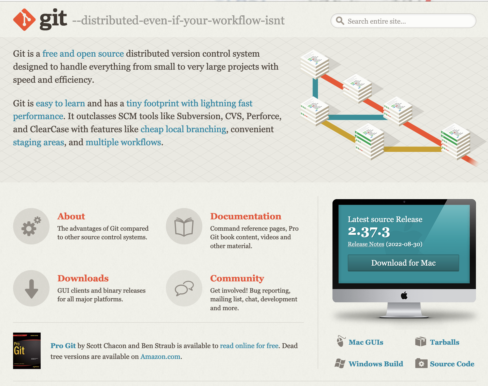
- 任何人都可以做出软件源代码的分支
- 然后在分支上进行突变
- 这些突变也有可能会合并到主干
- 随着互联网的发展
- git有了一些专门的代码同步网站
github
- 这就要去传说中的github了
- 点击链接https://github.com
- 可以在本地的浏览器中打开
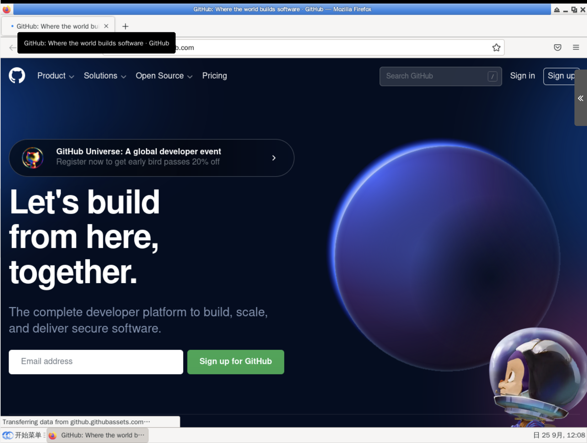
- 这个网站是世界制作软件的地方
- 这里确实有各种各样的源代码
- linux
- python
- blender
- 等等各种开源的仓库都在这里
- 用社交的方式开发和迭代
- 值得注册(signup)和深度使用
- 注意蓝桥云系统中不能访问邮箱
- 需要在本地得到邮箱验证码
- 那oeasy的python教程的代码在哪呢？
搜索
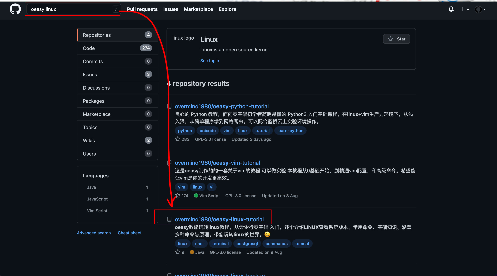
仓库细节
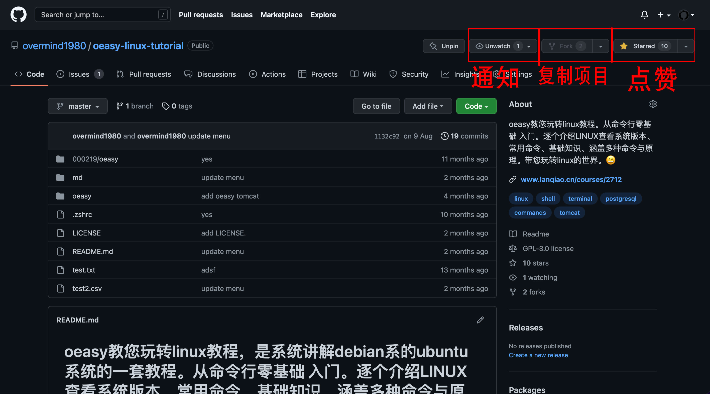
- star 点赞
- 为项目点赞
- 用实际行动支持这个项目
- 期待着您为oeasy点个⭐️
- 这样也便于再次找到
fork
- fork 复制项目
- 把当前这个项目复制到自己的项目库中
- 这样更容易找到
- 在当前项目基础上可以做修改做出自己项目
- 也可以反哺(pull-request)源项目
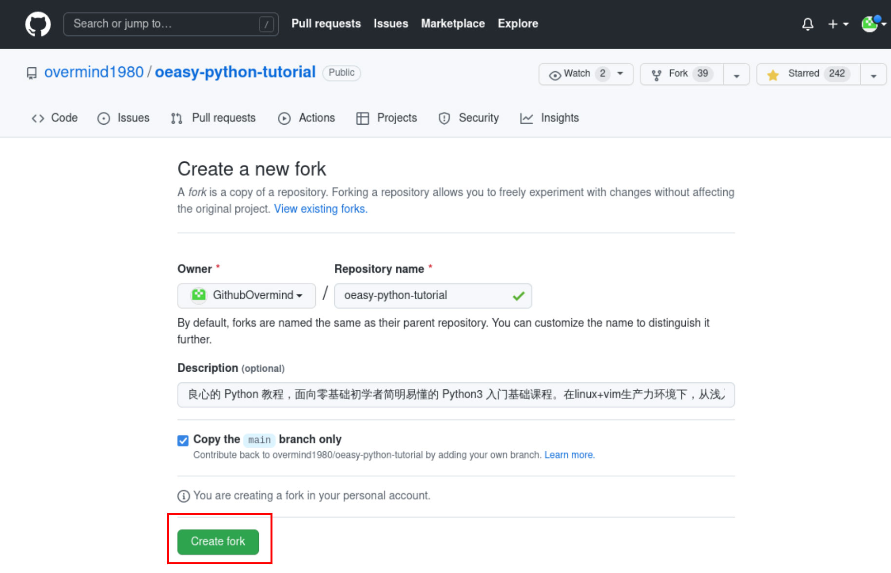
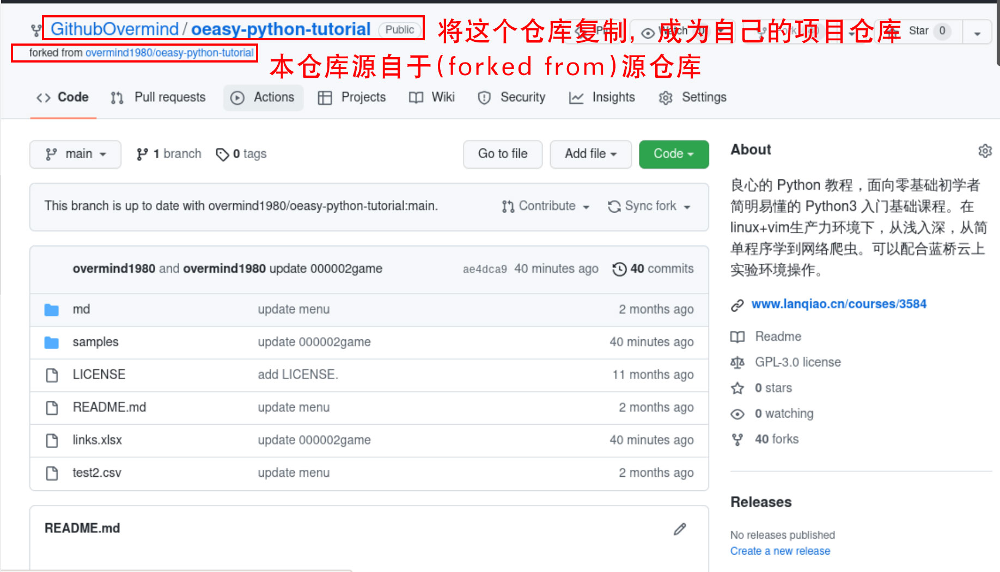
watch
- watch 通知
- 就是你对这个项目有疯狂的兴趣
- 这个项目的一举一动你都要接到通知
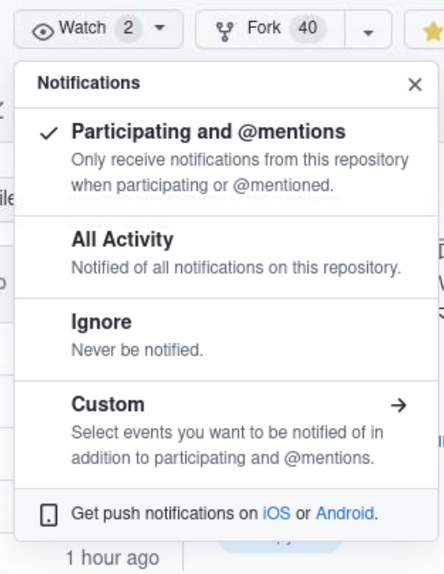
-
可以选择通知级别
- Paricipating and @mentions
- All Activity
- Ignore
- Custom
-
这个项目具体怎么下载呢？
下载项目
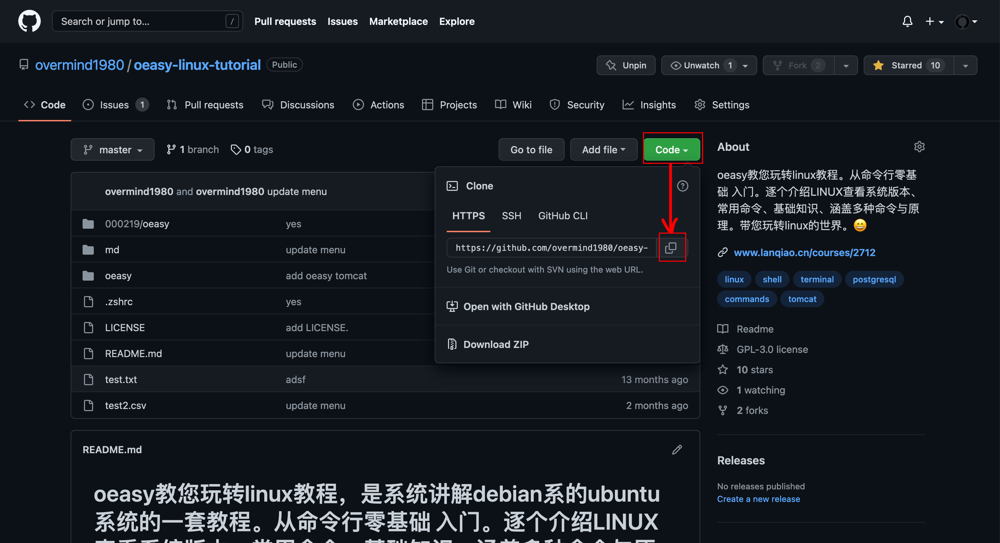
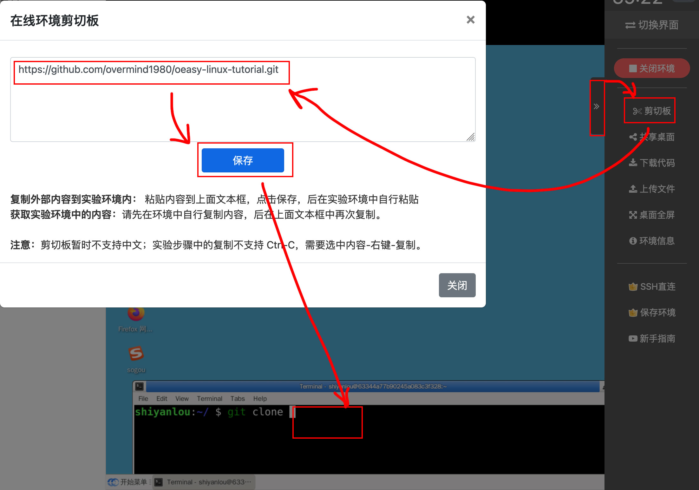
- 这样就把复制的文本粘贴到了网页中蓝桥云的系统剪贴板
克隆
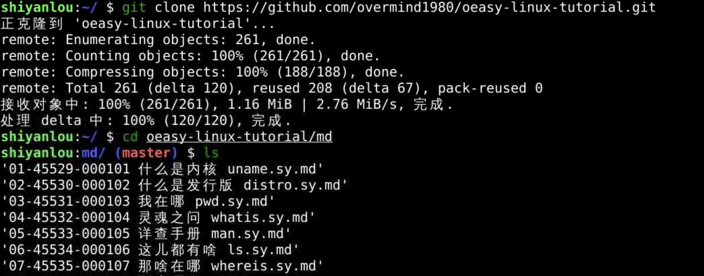
linux
战绩
- 开源软件 在各个领域
- linux
- debian
- vim
- python
- firefox
- postgres
- blender
- unreal
- minecraft
- 已经 可以和 商业软件 媲美
总结
- 信息 本身特性 决定
- 保存传递的 基础单元
- 分发和存储 软件的 成本
- 在这样的物理基础上
- 出现了自由软件运动
- 从rms提出的free software 开始
- 到gnu研发的各种软件
- 自由软件运动之后出现了开源运动
- github可以在全世界范围内进行协作
- linux是5000个极客一起协作出来的内核
- 除了内核之外
- 程序要运行还需要一个壳子
- 具体是什么呢？🤔